$$qf_commondoc_header.start$$ $$qf_commondoc_header.end$$
$$invisibleref:GANSEN08:Gansen A (2008) Chromatin at the Nanolevel. Dissertational Thesis. Available at: http://archiv.ub.uni-heidelberg.de/volltextserver/8342/1/Dissertation_Gansen.pdf $$
$$startbox_note$$
You can find example data in the folder $$plugin_info:examplesdir:tcspcimporter$$:
YOu can expect FRET-histograms like these:
| dna.t3r |
NucleosomeWT_NaCl150mM.t3r |
| 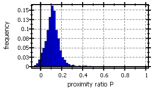 |
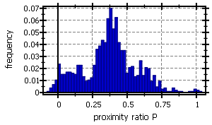 |
$$endbox$$
Basic Workflow
The basic usage of the tool works as follows:
- Start the burst analyzer by clicking Data Items | Insert Raw Data |
 TCSPC Burst Analyzer ... in the main window.
TCSPC Burst Analyzer ... in the main window.  $$note:The tool may also be started several times to compare the results from several input raw data files!$$
$$note:The tool may also be started several times to compare the results from several input raw data files!$$
- Select the TCSPC raw data file to be processed by clicking
 and wait until the further widgets are actiavted:
and wait until the further widgets are actiavted:

- Now you can perform some basic settings:
- You can specify a temporal data-range within the measurement, if you don't want to evaluate the full dataset.
- set which input channel detected green photons (default: 0, the avg. countrate for the different channels is shown in parantheses)
- set which input channel detected red photons (default: 1, the avg. countrate for the different channels is shown in parantheses)
- You can also specify a second TCSPC file (of the same dataformat!), which contains a background measurement (e.g. of the buffer without fluorescent molecules). The countrate in this file is average to yield $(B_g, B_r)$.
- Finally click on
 to read in the sepcified datasets. $$note: If you change any of the settings above lateron, you will have to click this button again!$$
to read in the sepcified datasets. $$note: If you change any of the settings above lateron, you will have to click this button again!$$
- Now you are presented with the second tab "2. Burst Selection" of the Burst Analyzer, which shows the interphoton time trace IPT of the measurement:
 or the countrate trace of the measurement:
or the countrate trace of the measurement:
 You can chhose how these are displayed on the top-right corner (red box) of the window. The IPT plot shows for each photon the duration until the next photon, agains the photons arrival time (macrotime). The countrate plot simply counts the number of photons in small time-bins (here 20ms) and shows the result trace. THe plot in this window shows only a fraction of the whole measurement. You can choose the length of this fraction ("display duration") and its position in the whole measurement ("display position") at the top-right. There you can also chose the bin width for the countrate trace.
You can chhose how these are displayed on the top-right corner (red box) of the window. The IPT plot shows for each photon the duration until the next photon, agains the photons arrival time (macrotime). The countrate plot simply counts the number of photons in small time-bins (here 20ms) and shows the result trace. THe plot in this window shows only a fraction of the whole measurement. You can choose the length of this fraction ("display duration") and its position in the whole measurement ("display position") at the top-right. There you can also chose the bin width for the countrate trace.
Below the display mode settings, the dialog presents some basic statistics about the meausrement in the box "Info":
 If you compare the countrate-trace and the IPT-trace, you can make out burst easily in each on. In the countrate, bursts show up as peaks, while in the IPT-trace they show up as groups of photons with low IPTs.
If you compare the countrate-trace and the IPT-trace, you can make out burst easily in each on. In the countrate, bursts show up as peaks, while in the IPT-trace they show up as groups of photons with low IPTs.
- Now you can configure and perform the burst search. This is done, as described in the introduction, i.e. by finding a stretch in the experiment, during which the interphoton time (IPT) for several photons is shorter than a pre-defined level. Here are two images that show the countrate trace and the correspinding (smoothed, see below) IPT-trace with a burst at $(t\approx41.22\mathrm{s})$:

 The IPT-level is shown as a red line. The burst search is configure below the graphs:
The IPT-level is shown as a red line. The burst search is configure below the graphs:
 Set these parameters as follows:
Set these parameters as follows:
- Define the settings of the LEE-filter that is used to smoothes the IPT. Typical settings with good results for confocal single-photon measurements (e.g. for spFRET) are a window-size of $(M_{LEE}=10-20\mathrm{photons})$ and $(\sigma_0=5\mathrm{ms})$. Here is a comparison of different settings of the major parameter $(M_{LEE})$:
 Usually you can leave $(\sigma_0)$ at its preset $(\sigma_0=5\mathrm{ms})$, as there is only a minor influence of this value:
Usually you can leave $(\sigma_0)$ at its preset $(\sigma_0=5\mathrm{ms})$, as there is only a minor influence of this value:

- Now set the other parameters of the burst search: Depending on the expected brightness and speed of motion (diffusion coefficient) of your sample, you can set the minimum number of photons in a burst and the maximum burst duration. If a burst has too few photons it might be a particle that oly swiftly enters the focus and does not provide good statistics. If the burst is too long, chances are that this is a slow-moving aggregate, or a double-molecule event. FInally you should set the level of the IPT to a value that is well above the background level. This can easily be done by visual inspection of the IPT-plot with the level shown as red horizontal line.
- When all settings are satisfactory, click on
 Now the filter and burst search will be applied, the graph will be updated and below the editing widgets, the number of found bursts will be displayed:
Now the filter and burst search will be applied, the graph will be updated and below the editing widgets, the number of found bursts will be displayed:
 Also the last tab "3. Burst Analysis" will be activated.
Also the last tab "3. Burst Analysis" will be activated.
- If you are not satisfied with the found bursts, repeat the steps above and click on
to update the results.
Now switch to the last tab "3. Burst Analysis" which shows diverse histograms and correlation plots of the extracted properties of the bursts:
 Here you can still filter the bursts for their countrate, which also helps to further exclude double-labeled, or double-moleucle events:
Here you can still filter the bursts for their countrate, which also helps to further exclude double-labeled, or double-moleucle events:

 From the filtered data, several histograms can be caluated. These are shown at the top-left (1) and you can use the conmbobox (2) above the plot to select a different histogramming parameters:
From the filtered data, several histograms can be caluated. These are shown at the top-left (1) and you can use the conmbobox (2) above the plot to select a different histogramming parameters:
 Below the histogram plotter, you can set the parameters used to calculate the parameters for the histograms (e.g. background intensities for the proximity values, or crosstalk-factors for the FRET-efficiencies):
Below the histogram plotter, you can set the parameters used to calculate the parameters for the histograms (e.g. background intensities for the proximity values, or crosstalk-factors for the FRET-efficiencies):
 A click on "Apply" recalculates the histograms with the new parameters. $$note:The buttons
A click on "Apply" recalculates the histograms with the new parameters. $$note:The buttons  next to the background edit widgets allow to set the background intensity to the given value, which was extracted from the buffer measurement, if one was applied!$$
On the rhs of the window, a list of basic statistical figures about the sample is given (and updated after a click on "Apply"):
next to the background edit widgets allow to set the background intensity to the given value, which was extracted from the buffer measurement, if one was applied!$$
On the rhs of the window, a list of basic statistical figures about the sample is given (and updated after a click on "Apply"):
 Finally you can store the results, as tables, where each row is one burst and the columns contain the different burst parameters:
Finally you can store the results, as tables, where each row is one burst and the columns contain the different burst parameters:
 This is done with the buttons
This is done with the buttons

 These store the tables either to a table RDR in the current project (including updatable histograms!), or to a data-file (e.g. CSV, Matlab or Excel).
$$note:If you want to compare different settings of the analysis parameters, you can set the initial parameters and then store the results. Then set new parameters and store again. This way you get several tables in the project, or several files on the harddisk that you can compare. The previoulsy stored results will NOT be overwritten updates (autonatically).$$
These store the tables either to a table RDR in the current project (including updatable histograms!), or to a data-file (e.g. CSV, Matlab or Excel).
$$note:If you want to compare different settings of the analysis parameters, you can set the initial parameters and then store the results. Then set new parameters and store again. This way you get several tables in the project, or several files on the harddisk that you can compare. The previoulsy stored results will NOT be overwritten updates (autonatically).$$
Multi-File Workflow
The burst analyzer also allows to combine several files into one evaluation. To do so:
- Follow the steps above for the first file. When saving the results in the final step, use the button
 Then a new list Multi-File Store will open on the rhs of the dialog:
Then a new list Multi-File Store will open on the rhs of the dialog:
 This list is initialized with an entry for the current file and can be edited with the buttons above the list:
This list is initialized with an entry for the current file and can be edited with the buttons above the list:
 These allow to clear the list, delete the selected entry, or move the selected entry up or down.
These allow to clear the list, delete the selected entry, or move the selected entry up or down.
- Return to the first tab "1. File Selection", select a new "Input TCSPC file", set all other settings and load it with
Then follow the rest of the evaluation steps, as for the first file until you can save the results.
- Click on the button
again and a second entry will be added to the Multi-File Store:
 Repeat these steps for all files that make up your measurement.
Repeat these steps for all files that make up your measurement.
- Finally you can store a table with the properties of all bursts (and a numeric file-id in one column), by clicking on the buttons below the Multi-File Store list:
 these will again create either a file with the table as CSV/Excel/Matlab/..., or a table RDR in the current project (including updatable histograms!). The two check-boxes above the buttons allow to set whether:
these will again create either a file with the table as CSV/Excel/Matlab/..., or a table RDR in the current project (including updatable histograms!). The two check-boxes above the buttons allow to set whether:
- the bursts should be renumbered. If checked, each bursts receives a continuous numebr that is unique over all files, otherwise the burst enumeration restarts at 0 for each file.
- a columne with a file-ID (as an integer number) should be added to the table (as alast column).
$$note:The histograms in the Burst-Analysis tab always only show the results of the current file, not the histograms over all files. To view these:
- Click on
 after evaluating all files
after evaluating all files
- Double-click the new entry in the project:

- In the table RDR-editor window, choose "Plots" and then the histogram you are interested in.
$$
Fitting Distribution Models and Changing the Histogram Parameters
Evaluating a measurement and adding the results to the project
- Perform an evaluation as described above for the example fils
- $$plugin_info:examplesdir:tcspcimporter$$NucleosomeWT_NaCl150mM.t3r
is a measurement of a double-labeled nucleosome that shows a multi-peak FRET-histogram (data-format: $$importer:name:tcspcimporter_picoquant$$)
using this background/buffer measurement:
You can expect FRET-histograms like this
I.e. in brief perform thes stepes (details,s ee above):
- Tab 1. File Selection: Select the file NucleosomeWT_NaCl150mM.t3r after a click on and then choose the background file buffer.t3r as "Background TCSPC file". Finally click on <
img src="pic/fretchen_pic005.png">
- Tab 2. Burst Selection use these settings and you should get around 1300 bursts with an average duration of 3.8ms:

- Tab 2. Burst Analysis If you are satisfied with the histogram, click on
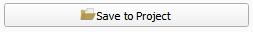
The histogram should approximately look like this:
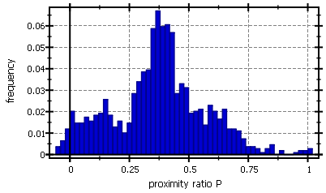
Finally the project should contain two tables:

- Finally you can close the Photon Burst Analyzer window.
Editing the Histogram Parameters
The data has been exported as two tables. One with the data from all bursts and one with only those bursts that have passed the countrate-filter on the third tab. For this tutorial, you can use any of the two tables.
- Open the table-editor for one of the two tables in the project, by double-clicking its entry in the project tree. In the editor window, choose the second tab Data Table:
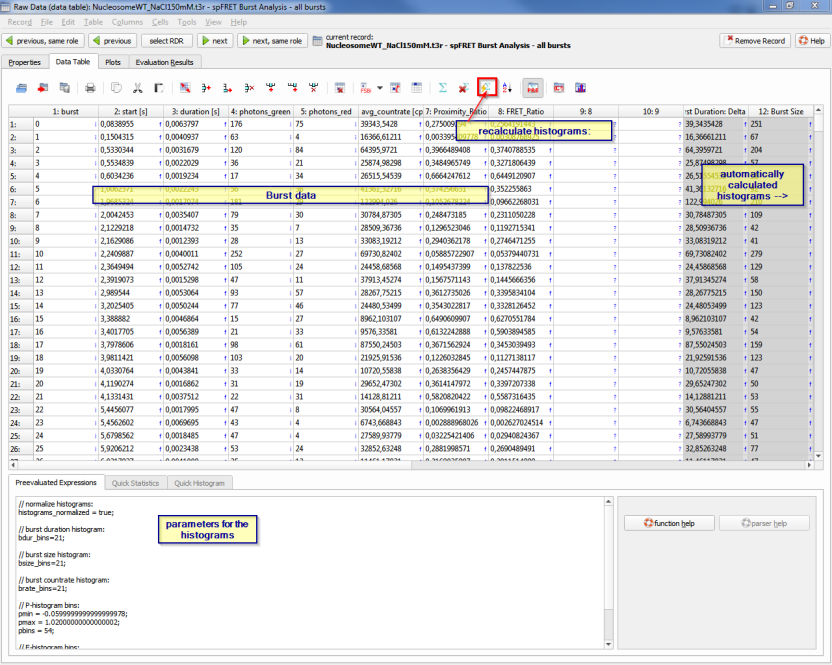
The data-table is split into three parts:
- The first 8 columns contain the data of the different bursts. The first column is the burst-ID, the next two define the start and duration of the burst (in seconds). The follow the number of photons in the green and red channel and the average countrate (in cps=counts per second). Finally the table contains the proximity ratio and FRET ratio calculated for the burst
- In two columns, some summarizing properties of the bursts are calculated from the values in the first block of columns: The burst duration in milliseconds as $$codeexample:column(6)*1e-3$$ and the burst size, i.e. the sum of photons in both detection channels:$$codeexample:column(4)+column(5)$$ The table uses column-expressions (see the online-help on the table plugin for details) to calculate these properties and you can inspect (and alter) these expressions by double-cliking any column-header.
- The last part of the table contains column expressions (see the online-help on the table plugin for details) that calculate different histograms from the data in the first columns. Each histogram is characterized by two columns, one for the x-axis and one for the frequency/y-axis.
If you inspect the column-expressions for the histograms, you will see that they use constants that are defined at the bottom of the editor window in the section Preevaluation Expressions.
- Now look at the third tab "Plot" in the editor window:
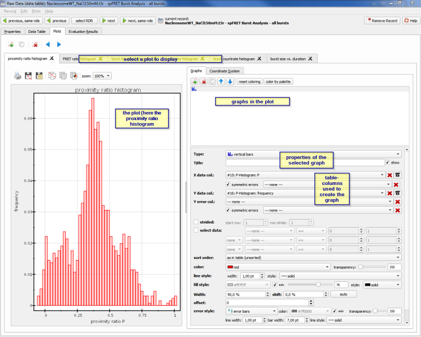
- Now to demonstrate, we will change the bin-wdth of the proximity ratio histogram. So go back to the tab Data Table. The bin-width and histogram-range of the proximity ratio histogram is controlled by the following parameters in the preevaluation expressions:
$$codeexample:// P-histogram bins:
pmin = -0.0599999999999999978;
pmax = 1.02000000000000002;
pbins = 54;$$ These parameters result in a histogram like this:
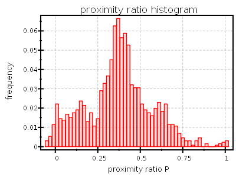
- Now change these parameters to:$$codeexample:// P-histogram bins:
pmin = -0.1;
pmax = 1.2;
pbins = 13;$$ This corresponds to a bin-width of $((1.2-(-0.1))/13=0.1)$. To update the histograms, click on the button  above the table.
above the table.
- If you switch back to the tab Plots the histogram will maybe no longer fit into the plot window. To fix this, select the sub-tab "Coordinate System" and then the sub-sub-tab "Axes" on the rhs:
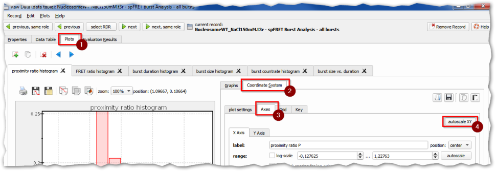
Finally click on the button "autoscale XY" (4) to autoscale the plot. It should then look approximately like this:
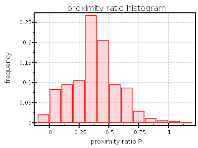
If you repeat the last step again, but now set$$codeexample:// P-histogram bins:
pmin = -0.1;
pmax = 1.2;
pbins = 39;$$
you will get a plot like this:
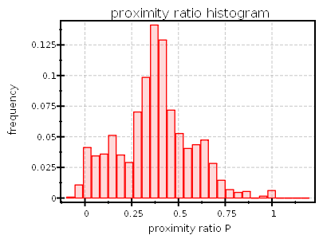
This we will use for data-fitting in the next section.
Performing a fit
Fit the Data
- Now add a Curve Fit evaluation to the project by clicking in the mainwindow: Data Items | Insert Evaluation | General Curve Fitting | Histogram Fitting. The project should now look as follows:
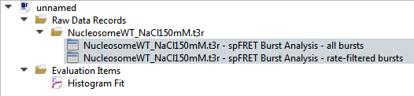
- Double-click the entry Histogram Fit to open the Curve-Fit editor:
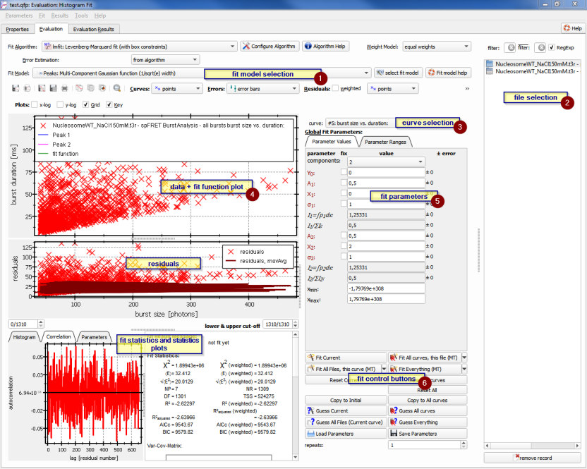
- First make sure, that the fit model $$fitfunction:name:gen_multigaussian_sqrte$$ is selected at the top of the window (1).
- Then select the table RDR/file that you have edited in the last section, or that you want to fit (2).
- Now select the curve "#0: proximity ratio histogram" to fit (3). NOw the plot (4) should display the histogram (data-points X) and a non-fitting function (lines):

- Now we will have to find good initial conditions for the fit. SO edit the fit parameters (5) first to a simple 1-component model:
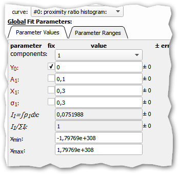
This fixes the offset $(Y_0)$ of the model to $(Y_0=0)$, sets the amplitude of the first component to $(A_1=0.1)$, its position to $(X_1=0.3)$ and its width to $(\sigma_1=0.1)$. The fit should look like this:
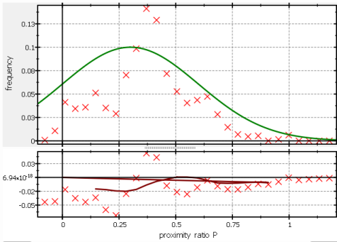
- Starting with these initial conditions, we can perform a fit by clicking the button (6)
- The fit will change to:
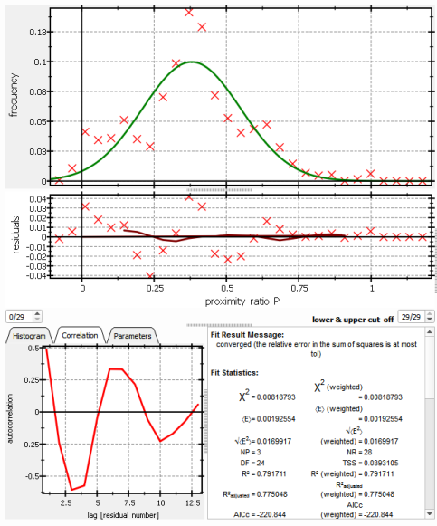
This is not too bad a fit, but there are still clear structures in the residuals (S-shape) and more clearly in the residual correlation at the bottom-left. To improve this, we can add more components.
- Now change the number of components to 2 in the fit-parameters. Again you can set the initial parameters for the second component by hand, or you can use the button (6)
After that, press again the button (6)
and the fit should be improved to:
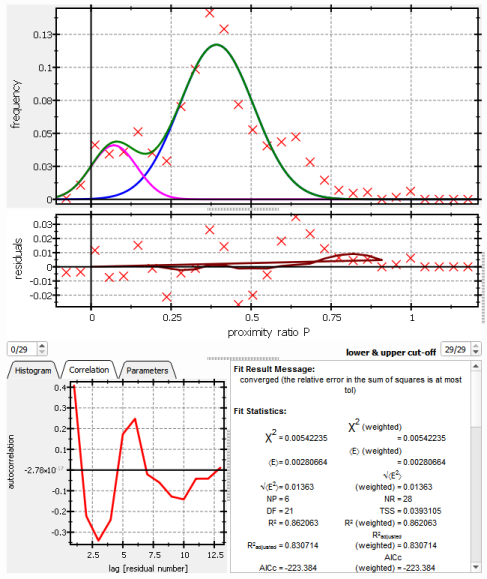
- Still this fit shows some non-random structures, so we add another components (i.e. set components: 3) and set its initial parameter values to $[A_3=0.05, X_3=0.7, \sigma_3=0.05.]$If you now click on (6)
gives this result:
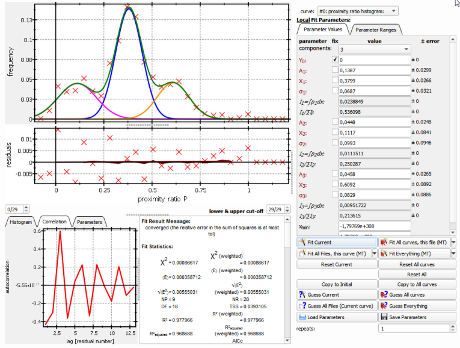
This result does not require any additional component, because the residuals (and the residual correlation) are randomly scattering around 0. You can interpret the three components as three FRET species and read their relative abundance from the paramaters $(I_i/\sum I_i)$, which are the relative areas of each component.
$$startbox_note$$
You can further improve the fits (and their stability) by fixing some of the values to known values (e.g. fix $(X_1=0)$ if you always expect a component at $(P=0)$). Another possibility is to change the parameter-ranges for the fit parameters. These can be edited if you switch to the tab Parameter Ranges above the fit parameters:
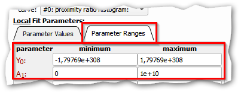
Instead of fixing the $(X_1=0)$ for the zero-FRET peak, you can alternatively also set the parameter range to a small range around 0: $[-0.05\leq X_1\leq 0.05,]$ which will have a comparable effect to fixxing, but gives the model a bit more freedom. Likewise it might make sense to limit all position parameter $(X_i)$ to a range that conincides with the range of the histogram $[-0.1\leq X_i\leq 1.2.]$ This will help, if the fit algorithm tries to position a component far outside the data range, which can lead to a non-convergent fit (and NAN-errors!)
$$endbox$$
Statistical Model Selection
The curve-fit plugin provides statistical properties that allow to make a statistical model selection to find the model that best fits the data. For this, you can use the fit statistics parameter AICc (Akaike information criterion) or BIC (Bayes information criterion), which are available from the fit statistics at the center-bottom of the fit dialog. There you also find the $(\chi^2)$ parameter, which is the residual sum of squares and tells you about the distance of the model from the data. For a 1-,2-,3- and 4-component fit to the histogram above, we obatined:
| components |
$(\chi^2)$ |
BIC |
Plot |
| 1 |
0.0082 |
-217 |
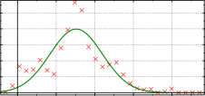
|
| 2 |
0.0054 |
-219 |
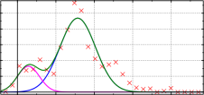
|
| 3 |
0.00087 |
-261 |
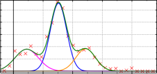
|
| 4 |
0.00083 |
-252 |
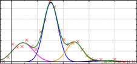
|
| 5 |
0.00040 |
-262 |
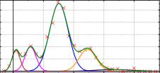
|
If you would choose the number of components based on the $(\chi^2)$ only, you would use 5 components as these have a very low $(\chi^2)$. However these 5 components most probably only describe some noise structures in the data. Therefore you should base the decision also on another parameter, such as the BIC. Here you should choose the model with the smallest (here moste nagtive) BIC, which will then take into account the principle of parsimony (use the model that uses the least number of parameters to descibe the data). Here you can see that 4 components have the most negative BIC, so you should use those. In addition, the step from 3 to 4 components is only small, so even only three components might be statistically supported by the data.
References
$$references$$